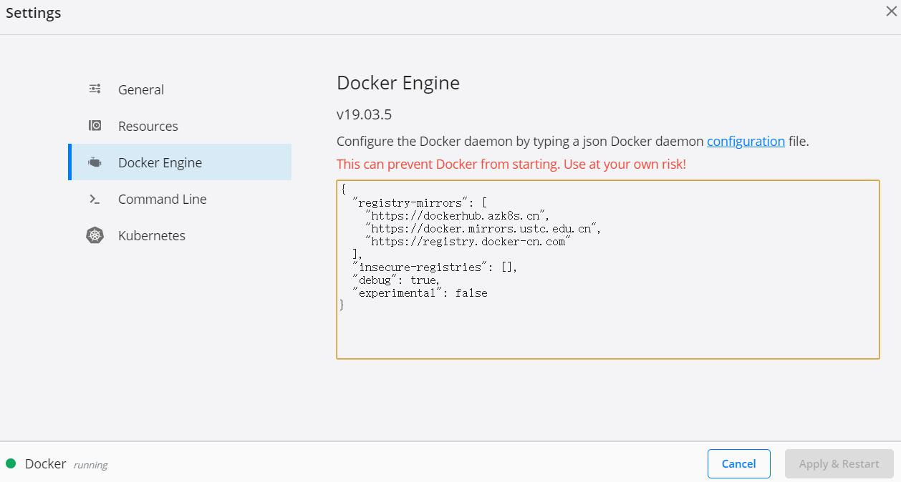

泡泡机器人SLAM与你一同成长❤
Docker简介
Docker 是一个开源的应用容器引擎，基于Go语言 并遵从Apache2.0协议开源。
Docker 可以让开发者打包他们的应用以及依赖包到一个轻量级、可移植的容器中，然后发布到任何流行的 Linux 机器上，也可以实现虚拟化。
容器可以认为是一种虚拟环境，它完全使用沙箱机制，相互之间不会有任何接口（类似iPhone的app）,更重要的是容器性能开销极低。
(我认为是一种管理虚拟环境的引擎，方便快速构建任何虚拟环境，而各个环境之间不会相互影响，并且支持快速移植和部署。)
和其他虚拟机软件之间的不同
Docker 是一个用于开发，交付和运行应用程序的开放平台。Docker 能够将应用程序与基础架构分开，从而可以快速交付软件。借助 Docker，可以与管理应用程序相同的方式来管理基础架构。通过利用Docker 的方法来快速交付，测试和部署代码，可以大大减少编写代码和在生产环境中运行代码之间的延迟。
与VirtualBox相比，VirtualBox虚拟化硬件，Docker虚拟化操作系统。 两者比较：
- VirtualBox，是创建硬件虚拟化的软件。
通常情况下，一个操作系统运行在硬件上，其中硬件和操作系统之间的通信是通过移动数据到内存地址，然后发出指令来通知可使用该数据的硬件（或者是数据在被读取时）。 在VirtualBox（或其它虚拟机）设置的环境中，那些内存地址实际上是虚拟机软件自身的内存区域，并且那些指令是由虚拟机而不是直接由底层的CPU解释的。 实际结果是，你在VirtualBox中运行一个操作系统，对于这个操作系统来说，VirtualBox程序看起来像一台完整计算机，硬件以及所有配件都有。实际上它不知道自己是在另一个程序中运行的。
- Docker，则是不进行硬件的虚拟化。
Docker 的作用是创建一个文件系统，使其看起来像一个普通的Linux文件系统，并且运行应用程序在一个所有文件和资源都在文件系统内的锁定环境中。 事实上，该应用程序的容器并不模仿任何硬件，应用程序仍然在硬件上运行，它只是隔离了应用程序并允许开发人员可以运行该应用程序跟特定的并且完全不是主机操作系统的软件和第三方库合作。 这意味着，在启动或停止Docker应用程序时几乎没有开销，因为它们不需要预先分配的内存和磁盘空间等等。因此Docker容器很容易设置或者拆除。 此外，容器在加装需要系统中各种硬件组件上运行软件的时候并不浪费任何开销，因为它是基于系统内核，直接使用硬件的， 不需要独立分配物理资源。多个容器共享内存，CPU等物理资源。
Docker的一些优点
1、快速，一致地交付应用程序
- Docker 允许开发人员使用提供的应用程序或服务的本地容器在标准化环境中工作，从而简化了开发的生命周期。容器非常适合持续集成和持续交付（CI / CD）工作流程，请考虑以下示例方案：
开发人员在本地编写代码，并使用 Docker 容器与同事共享他们的工作。
他们使用 Docker 将其应用程序推送到测试环境中，并执行自动或手动测试。
当开发人员发现错误时，他们可以在开发环境中对其进行修复，然后将其重新部署到测试环境中，以进行测试和验证。
测试完成后，将修补程序推送给生产环境，就像将更新的镜像推送到生产环境一样简单。
2、响应式部署和扩展
- Docker 是基于容器的平台，允许高度可移植的工作负载。Docker 容器可以在开发人员的本机上，数据中心的物理或虚拟机上，云服务上或混合环境中运行。
- Docker 的可移植性和轻量级的特性，还可以使开发人员轻松地完成动态管理的工作负担，并根据业务需求指示，实时扩展或拆除应用程序和服务。
3、在同一硬件上运行更多工作负载
- Docker 轻巧快速。它为基于虚拟机管理程序的虚拟机提供了可行、经济、高效的替代方案，因此可以利用更多的计算能力来实现业务目标。
- Docker 非常适合于高密度环境以及中小型部署，而开发人员可以用更少的资源做更多的事情。
Docker的基本概念
核心概念：镜像，容器

Docker安装/(以Win10安装为例，Linux详见另一个博客)
1. Docker-Desktop下载
打开 DockerHub 直接下载 docker-desktop 安装包即可。下载完成会得到"Docker Desktop Installer.exe"软件，选个合适的路径，一路Next安装即可。
- Win7 或Win8 需要借助 docker
toolbox 完成安装。
- Win10需要开启Hyper-V功能，开启位置位于：Win10左下角第一个图标右键单击->应用和功能->启用或关闭Windows功能，从中找到Hyper-V选中即可。
安装完成之后会在Windows的图标中出现一个小鲸鱼的图标。
2. 安装测试
可以右键单击Docker图标进行一些个性化调整。为了加速软件和镜像的下载速度，最好将Docker镜像源为阿里云或中科大源，不然下载速度会很慢。如下：

Docker基础命令
安装完之后，在系统任何位置打开控制台或bash命令行（终端均可运行docker命令）
docker --version
查看docker的版本。
docker
即可列出Docker客户端的所有命令行选项，当想要查找某一命令时非常方便。
docker search
如：docker search ubuntu 在Docker
Hub中搜索名为ubuntu的镜像。
docker pull DockerHubID/imageName
如：docker pull ubuntu 。若当前Docker
Hub账户中没有该名称的镜像，则会自动从Docker
Hub公共仓库中下载并拉取到本地。因此这个名字需要注意，不然很容易就下载错了或下载成别人的开源镜像了。另外还可以指定不同标签版本的镜像：docker pull ubuntu:18.04，即可拉取18.04的ubuntu。
docker images
列出本地主机的全部镜像。
docker ps
将全部的容器列出来，
添加-a命令可以显示全部容器，不加-a仅列正在运行的容器，未运行或退出的容器将不会被列出来。ps=process
status。
docker run imageName
运行imageName这个镜像，得到一个容器。如：docker run -it ubuntu /bin/bash，-i表示交互式操作，-t表示终端，ubuntu为镜像名称，放在镜像名后的是命令，这里我们希望有个交互式
Shell，因此用的是
/bin/bash。若想在后台运行Docker服务，则需要通过-d指定容器的运行方式。
如：docker run -itd --name ubuntu-test ubuntu /bin/bash，另外可以通过：docker run -t -i ubuntu:18.04 /bin/bash
，可以运行不同tag标签的镜像。
docker exec containerId
进入Docker容器，这里指进入后台运行的容器，如果从这个容器退出，不会导致容器的停止。如：docker exec -it id /bin/bash
docker attach containerId
同为进入已经开启的容器中，如果从这个容器退出，会导致容器的停止。
exit
接在控制台输入exit即可退出当前镜像。
docker stop containerId
停止容器。
docker start/restart containerId
通过容器id开启或重启容器。
docker rm containerId
删除容器，这个操作需要十分小心，因为是不可逆的操作，比如你在容器中写的代码，文档将会全部丢失。
docker rmi imageName
删除镜像，需要注意的是再删除镜像的时候需要将正在运行的容器先删除掉。
docker container prune
清理掉所有处于终止状态的容器。
docker top containerId
使用docker top来查看容器内部运行的进程。一般用不到。
docker login/logout
登入登出Docker Hub账号，这样就可以下载自己仓库中的镜像了。
注意事项
安装软件时最好提前将ubuntu的软件源换为国内镜像，不然速度慢到你难以想象，这里在安装好后已经及时对软件源进行了更新。